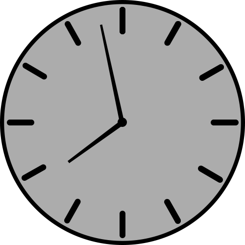
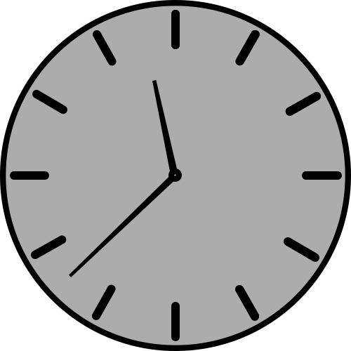
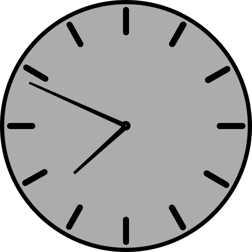

Rīta rosme
Pimdienas rīti priekš manis ir visgrūtākie, jo es esmu pieradis mācīties brīvdienās pēc pusnakts un tad jāceļas no rīta ļoti agri uz darbu. Taču no pozitīvās puses, pirmdienās man LU nav nevienas lekcijas, tāpēc es varu koncentrēties visu dienu darba uzdevumiem. Mana rīta rutīna sākas ar brokastīm, zobu mazgāšanu, jaunāko ziņu pārlūkošana un tad pienāk laiks doties uz darbu
Darba uzdevumi
Darbā es ierodos deviņos, un nākošo stundu es pavadu veicot man iedotos uzdevumus. 10:15 sākas pirmā darba sapulce, kurā katrs no mūsu komandas pastāsta, ko viņš paveica iepriekšējā darba dienā un kādi plāni ir uz šo dienu. Beidzoties sapulcei, līdz 11:30 turpinu veikt sevis iesākto darbu un tad ar darba kolēģiem dodos pusdienās. Pēc pusdienām man ir arī citas sapulces, vai arī turpinu strādāt un pirms 20:00 dodos prom no darba.
Vakara fiziskās aktivitātes
Pēc darba man ir divi varianti: ja to nedēļu notiek futbola spēle komandai, kurā es spēlēju, tad es dodos uz to, ja nē, tad es dodos uz trenažieru zāli un tur atrodos līdz 23:00, pēc kā es tikai dodos uz mājām. Atbraucot uz mājām, es paēdu vakariņas. Kaut arī jau ir nakts, pasēžu nedaudz telefonā, izmazgāju zobus un dodos gulēt, lai nākamajā dienā būtu enerģijas pilns.